A Iubeo project consists of a set of folders representing the different stages of a project according to the Project Management Institute (PMI) Framework: Initiating, Planning, Executing, Closing.
The initiating phase is the phase in which the first requirements of the project are gathered, the project manager is chosen, a project charter is defined.The planning phase is the phase in which the project manager starts refining the project's requirements and creates a work breack down structure (WBS) representing the main activities, work packages and deliverables of the projects. The Project Manager identifies the resources that will be involved and starts planning the necessary activities.
The Project execution is the phase in which the project work is done, according to the plan and thus aimed at satisfying the projects' requirements. Monitor and Control processes shall be periodically performed to identifies possible chagnes in the project's scope and verifies the quality of the perfomed work is inline with the adopted standards.
The Close phase is aimed at formally veryfying the produced deliverables satisfies the related requirements. In the close phase contrats with possible suppliers are also formally verified and closed.
Inside the folders that you will find in a new Iubeo project you can define models in textual domain specific languages representing the main aspects of each project management activity. At now Iubeo provides domain specific languages aimed at representing: requirements, work breakdown structures, resources and plans.
In order to create a new Iube project right click on the Project Explorer white area, choose NEw, Other and, in the dialog that will pop up choose Iubeo Project
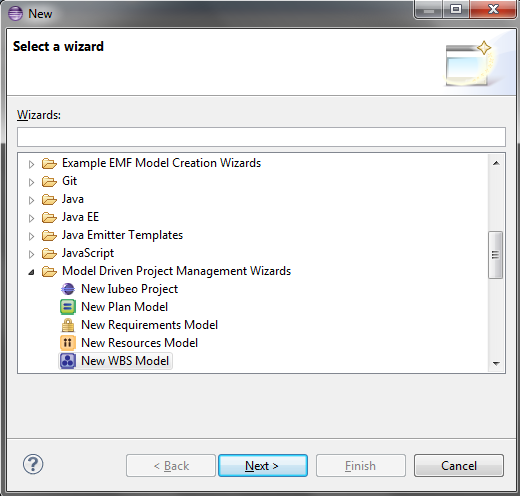choose a project name! In this example we are going to see how to manage the project of an android application
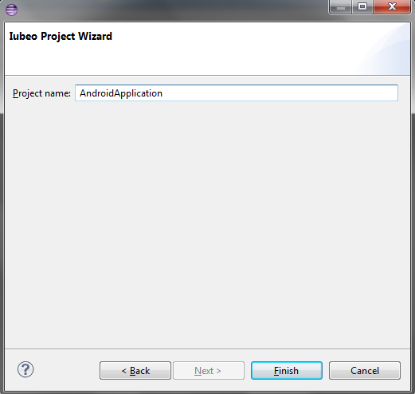The following project structure will be created with example models that will help you to get started quickly
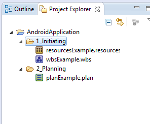As you can see the initiating folder is empty and we need to create a new requirements model. Right click on the folder and choose New, Other and, in the dialog that will pop up, choose Requirements Model
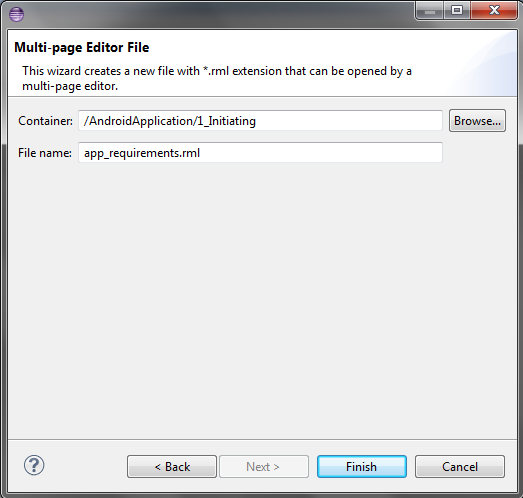The new file is not empty. It contains a simple example of how you can use RML (Requirements Modeling Language) the language provided by Iubeo to model requirements. Basically requirements are defined by means of the keyword 'req' and are contained in packages defined by the keyword 'package' and ecnlosed in curly brackets. Pacakges can be nested.
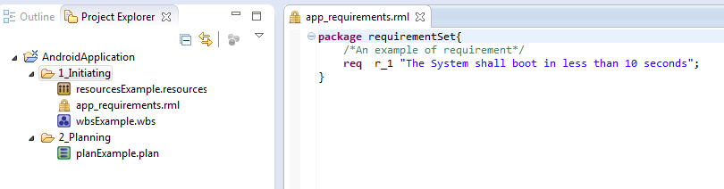In the following figure you can see how to use the RML langauge to model big set of requirements that are can also be nicely depicted in the Eclipse Outline. Defining requirements in Iubeo is important because, through the requirements model you can import and relate requirements in WBS in order to state what are the requirements satisfied that activities workpackges and deliverables.
info We are working hard for a seamless integration of Iubeo with IBM DOORS.
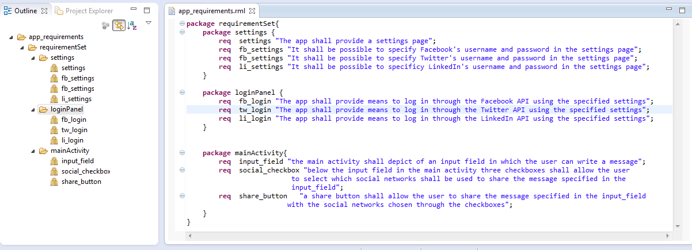A work breackdown structure is a tree structured decomposition of the the project's activities and deliverables. The leaves of the structures should be deliverables or work packages that are 'easy' to manage (i.e. few hours, etc.).
Project AndroidApplication{
req_import "app_requirements.rml";
WorkPackage ProjectManagement{
Deliverable ProejctManagementPlan; Deliverable ProjectStatusReport;
}
WorkPackage RequirementGathering{
Deliverable ProjectRequirements;
}
Activity Design{
WorkPackage UserInterfaceDesign{
Deliverable UIDescriptionDocument;
requirements { requirementSet.loginPanel; requirementSet.mainActivity; }
}
WorkPackage SystemArchitectureDesign{
Deliverable SoftwareDesignDescription;
requirements { requirementSet; }
}
}
Activity Development { Deliverable SourceCode;}
Activity Testing{ Deliverable TestsCode; Deliverable TestDescription; Deliverable TestResults;}
}
In the following picture you see the WBS model in Iubeo and how it is depicted by the WBS view
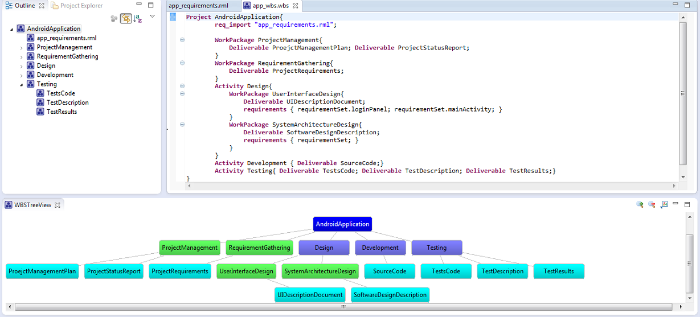
//Start defining group of resources
Group ProjectManager{
id sweng;
cost 100;
type 'PERSON';
}
Group SoftwareDeveloper{
id swdev;
cost 100;
type 'PERSON';
}
Group WorkStation{
id pc;
cost 2000;
type 'PC';
}
//then define single resources
Resource Tom{
type ProjectManager;
}
Resource Mike{
type SoftwareDeveloper;
}
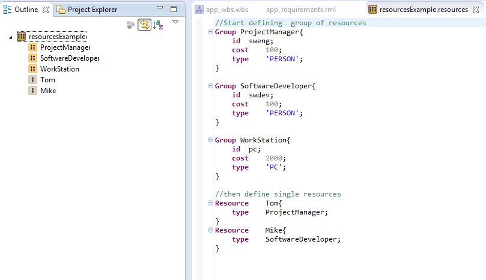
/*
* The Project description
*/
Project projectName {
// project's elements...
}
A project activity is represented by the activity keyword.
In iubeo an activity is characterized by :
Project project1 {
Activity activity1 {
starts '31/08/2013' ;
ends '20/9/2013';
completeness 20 % ;
}
/*
* activity2 description
*/
Activity activity2 {
after project1.activity1 offset 1;
duration 30;
completeness 0%;
dependsOn project1.activity1;
}
}
An activity group represents a set of logically related activities identified by a name. An activity group starts when the earliest activity it contains is started and ends when the last activity it contains is finished.
Project project1 {
/*
*represents a group of activities
*/
Group group1{
Activity activity1 {
starts '31/08/2013' ;
ends '20/9/2013';
completeness 20 % ;
}
/*
* activity2 description
*/
Activity activity2 {
after project1.group1.activity1 offset 1;
duration 30;
completeness 0%;
dependsOn project1.group1.activity1;
}
}
Activity activityname {
after project1.group1 offset 3;
duration 20;
completeness 0%;
dependsOn project1.group1.activity2;
}
}
We have implemented a dedicated plugin which uses the Nebula GanttChart Widget to depict the schedule defined by means of the Plan language.
In order to show it click on the Window menu->ShowView and select Other… then in the window that will pop up select the Gantt view.
The currently selected activity, in the outline or in the Plan editor, is highlighted in the Gantt view.
Also when you click on an activity in the Gantt view a pop up shows the information related to the clicked activity.
As you can see in this example although we have specified a duration of 25 days the activityName2 is said to be 33 days long. This is because only the working days are counted and by default Saturday and Monday are not considered working days. You can configure your own set of working days and holidays through the Eclipse preferences.
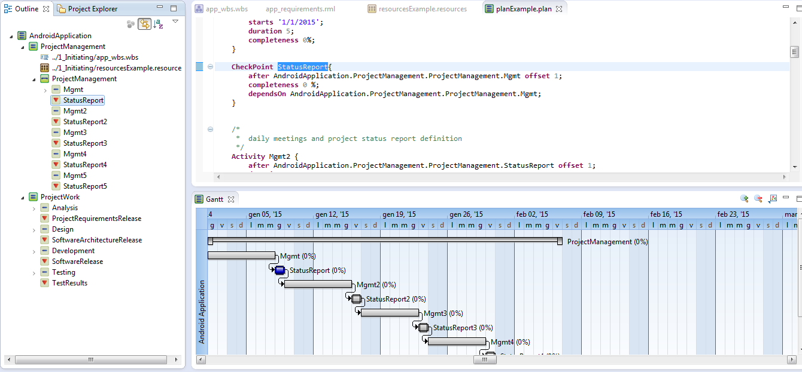
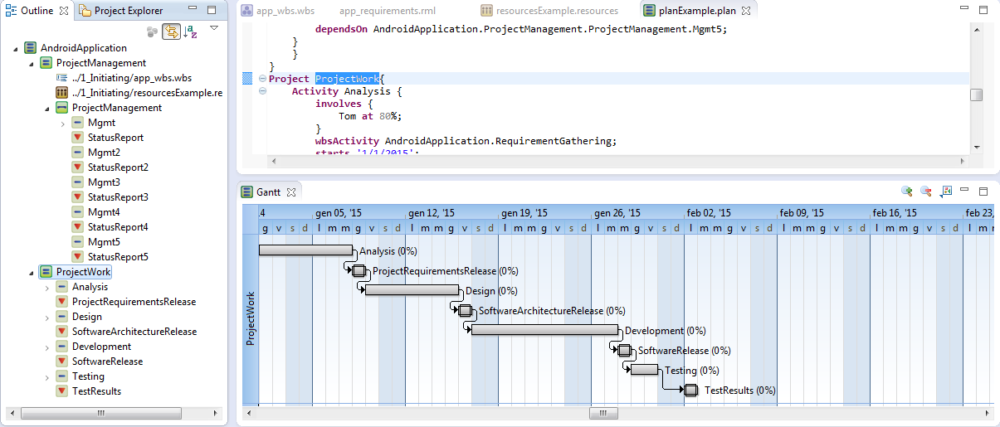
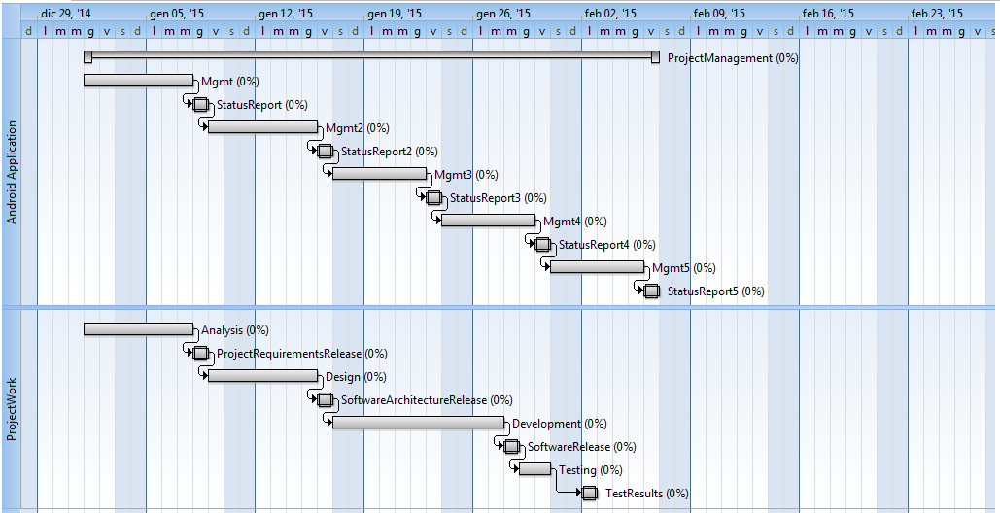
Program AndroidApplication {
Project ProjectManagement{
//define the long name of the project in this plan
name "Android Application";
//import (optional) the wbs of the project
wbs "../1_Initiating/app_wbs.wbs" project AndroidApplication;
//import (optional) the description of the resources (human resources included)
resources "../1_Initiating/resourcesExample.resources";
//now we start defining activities
/*relates to all the project management activities*/
Group ProjectManagement{
/*
* daily meetings and project status report definition
*/
Activity Mgmt{
involves {
Mike at 100%;
Tom at 20%;
}
wbsActivity AndroidApplication.ProjectManagement;
starts '1/1/2015';
duration 5;
completeness 0%;
}
CheckPoint StatusReport{
after AndroidApplication.ProjectManagement.ProjectManagement.Mgmt offset 1;
completeness 0 %;
dependsOn AndroidApplication.ProjectManagement.ProjectManagement.Mgmt;
}
/*
* daily meetings and project status report definition
*/
Activity Mgmt2 {
after AndroidApplication.ProjectManagement.ProjectManagement.StatusReport offset 1;
duration 5;
completeness 0 %;
dependsOn AndroidApplication.ProjectManagement.ProjectManagement.StatusReport;
}
CheckPoint StatusReport2{
after AndroidApplication.ProjectManagement.ProjectManagement.Mgmt2 offset 1;
completeness 0 %;
dependsOn AndroidApplication.ProjectManagement.ProjectManagement.Mgmt2;
}
/*
* daily meetings and project status report definition
*/
Activity Mgmt3 {
after AndroidApplication.ProjectManagement.ProjectManagement.StatusReport2 offset 1;
duration 5;
completeness 0 %;
dependsOn AndroidApplication.ProjectManagement.ProjectManagement.StatusReport2;
}
CheckPoint StatusReport3{
after AndroidApplication.ProjectManagement.ProjectManagement.Mgmt3 offset 1;
completeness 0 %;
dependsOn AndroidApplication.ProjectManagement.ProjectManagement.Mgmt3;
}
/*
* daily meetings and project status report definition
*/
Activity Mgmt4 {
after AndroidApplication.ProjectManagement.ProjectManagement.StatusReport3 offset 1;
duration 5;
completeness 0 %;
dependsOn AndroidApplication.ProjectManagement.ProjectManagement.StatusReport3;
}
CheckPoint StatusReport4{
after AndroidApplication.ProjectManagement.ProjectManagement.Mgmt4 offset 1;
completeness 0 %;
dependsOn AndroidApplication.ProjectManagement.ProjectManagement.Mgmt4;
}
/*
* daily meetings and project status report definition
*/
Activity Mgmt5 {
after AndroidApplication.ProjectManagement.ProjectManagement.StatusReport4 offset 1;
duration 5;
completeness 0 %;
dependsOn AndroidApplication.ProjectManagement.ProjectManagement.StatusReport4;
}
CheckPoint StatusReport5{
after AndroidApplication.ProjectManagement.ProjectManagement.Mgmt5 offset 1;
completeness 0 %;
dependsOn AndroidApplication.ProjectManagement.ProjectManagement.Mgmt5;
}
}
}
Project ProjectWork{
Activity Analysis {
involves {
Tom at 80%;
}
wbsActivity AndroidApplication.RequirementGathering;
starts '1/1/2015';
duration 5;
//ends '15/01/2013';
completeness 0%;
}
CheckPoint ProjectRequirementsRelease {
wbsDeliverable AndroidApplication.RequirementGathering.ProjectRequirements;
after AndroidApplication.ProjectWork.Analysis offset 1;
completeness 0%;
dependsOn AndroidApplication.ProjectWork.Analysis;
}
Activity Design {
involves {
Tom at 80%;
}
wbsActivity AndroidApplication.Design;
after AndroidApplication.ProjectWork.ProjectRequirementsRelease offset 1;
duration 5;
//ends '15/01/2013';
completeness 0%;
dependsOn AndroidApplication.ProjectWork.ProjectRequirementsRelease;
}
CheckPoint SoftwareArchitectureRelease {
wbsDeliverable AndroidApplication.Design.SystemArchitectureDesign.SoftwareDesignDescription;
after AndroidApplication.ProjectWork.Design offset 1;
completeness 0%;
dependsOn AndroidApplication.ProjectWork.Design;
}
Activity Development {
involves {
Tom at 80%;
}
wbsActivity AndroidApplication.Development;
after AndroidApplication.ProjectWork.SoftwareArchitectureRelease offset 1;
duration 8;
//ends '15/01/2013';
completeness 0%;
dependsOn AndroidApplication.ProjectWork.SoftwareArchitectureRelease;
}
CheckPoint SoftwareRelease {
wbsDeliverable AndroidApplication.Development.SourceCode;
after AndroidApplication.ProjectWork.Development offset 1;
completeness 0 %;
dependsOn AndroidApplication.ProjectWork.Development;
}
Activity Testing {
involves {
Tom at 80%;
}
wbsActivity AndroidApplication.Testing;
after AndroidApplication.ProjectWork.SoftwareRelease offset 1;
duration 2;
//ends '15/01/2013';
completeness 0%;
dependsOn AndroidApplication.ProjectWork.SoftwareRelease;
}
CheckPoint TestResults {
wbsDeliverable AndroidApplication.Testing.TestResults;
after AndroidApplication.ProjectWork.Testing offset 3;
completeness 0 %;
dependsOn AndroidApplication.ProjectWork.Testing;
}
}
}